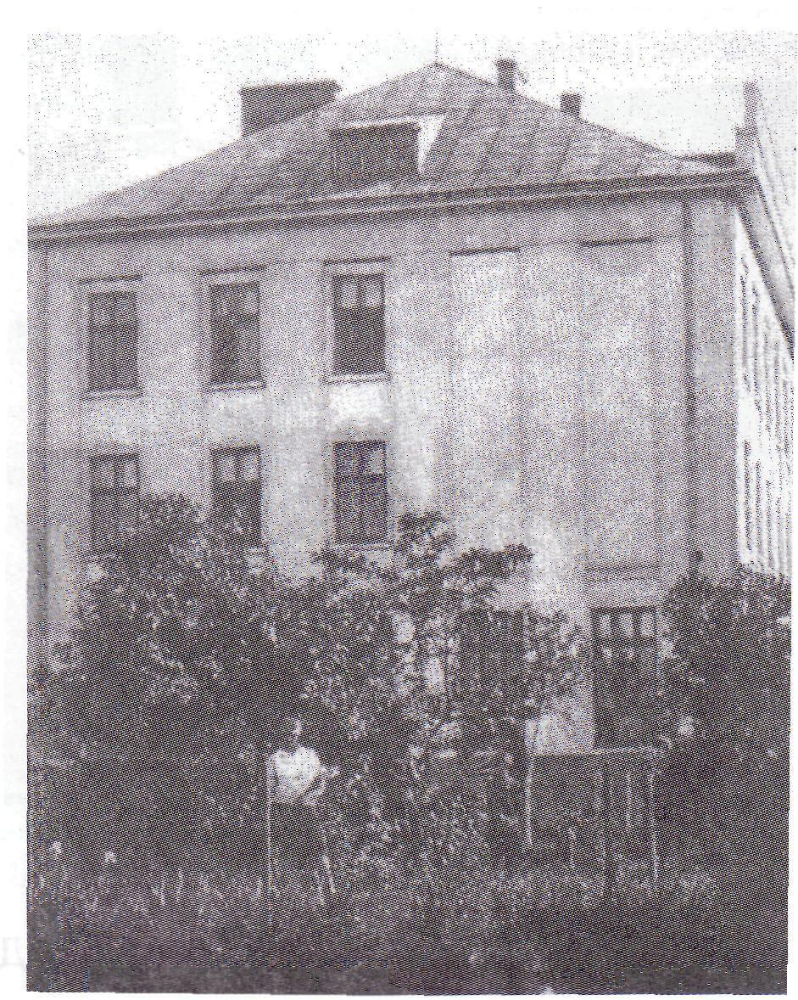

З ініціативи „Клубу Русинок у Львові” було доручено вчителям Академічної Гімназії організувати першу українську дівочу гімназію. Для цього у 1906 р. було створено окремий Комітет під проводом отця Спиридона Кархута. За згодою та за дорученням митрополита УГКЦ Андрея Шептицького ігуменя Володимира Філевич з радістю привітала цю постанову і ще того ж року було відкрито дівочу школу. Вона була заснована як приватна гімназія Сестер Василіанок у 1906 р. Її фундатором , невтомним опікуном і натхненником молоді став митрополит Андрей Шептицький Вона стала першою українською жіночою школою в Галичині, бо до неї у Львові існували дві державні гімназії, де вчилися хлопці, і вчительська семінарія для хлопців і дівчат. Наша гімназія - це унікальна школа, яка виховала сотні українських дівчат, дала їм глибоку освіту і підготовку до вступу у вузи.. Перший учительський колектив очолив о. др. Спиридон Кархут, було 5 професорів і одна монахиня. У першому класі разом з підготовчим курсом було 35 учениць.
Спочатку приватна гімназія СС Василіянок знаходилась в Академічному на вулиці Супінського, 21 (тепер це вул. Коцюбинського).Стара споруда гімназії не збереглася. Відомо, що гімназія була класичного типу, отже перевага надавалася вивченню латинської, грецької, німецької, французької та польської мов.
Директори гімназії 1906-1913рр. – о.Спиридон Кархут, 1913-1919рр. – о. Теодозій Лежогубський, 1921-1934 рр. – видатний вчений-україніст д-р ВасильЩурат ,1934-1939рр. – о.Василь Лициняк.
На початку 20-х років була придбана земельна ділянка в районі вул. Длугоша ( Розенштрасе, Ломоносова, тепер вул. Кирила і Мефодія), напроти старого ботанічного саду університету. У 1927 р. гімназія перемістилась у новозбудоване приміщення.
В умовах Польської держави (1919-1939) гімназія мала повні публічні права. Це означало, що атестат зрілості (матуру) учениці могли здавати у своїй гімназії. Права випускниць перед вступом були повністю рівними з ученицями державних польських гімназій.
Навчалися в гімназії 8 років. З першого гімназійного класу починалось вивчення таких дисциплін: релігії, української, польської та німецької мов, історії України і всесвітньої історії, географії, математики, природознавства, а також рисунку і каліграфії. У старших класах більшу увагу звертали на вивчення класичних мов: грецької і латинської, а також іноземних – німецької і французької. Філософію вивчали у 8-му, випускному класі. Гімназистки повинні були вміти не тільки читати та перекладати твори Гомера, Софокла, Еврипіда, Аристофана та інших, але й складати власні твори: вірші, оди, привітання, промови найчастіше латинською мовою. Кращі твори виходили друком у видавництві „Просвіта”.
Іспит зрілості після успішного закінчення 8-го класу складався з письмової та усної частини. Письмово складали українську, польську, латинську, грецьку мови, математику. Усні предмети здавали по одному на день. Це латинська мова, грецька, українська мова та література, математика, фізика. На першій усній матурі(випускному іспиті) , як і на всіх наступних до 1930 року, крім професорів, був присутній митрополит Андрей Шептицький.
Іншу сторінку в історію гімназії внесли 1939-1941 рр. У 1939 році, коли Галичину окупувала Радянська Армія, гімназію СС Василіанок перетворили на середню школу № 4. Директором став завзятий комуніст Павленко. Деякі монахині, вже у світському одязі, продовжували вчителювати, але з часом пішли. Раніше гімназистки звикли розпочинати науку молитвою, приходили до гімназії дещо раніше, щоб встигнути тихенько помолитися, поки прийде вчитель. Тепер новий директор заборонив молитву, власними руками скинув фігуру Матері Божої, яка стояла у кінці коридору, а на її місце поставив статую Сталіна.
З 1954 року наша школа стала школою з поглибленим вивченням англійської мови. У 2006 році СШ №4 стала Лінгвістичною гімназією. Учнями і випускниками СШ № 4 різних років є письменниця Ірина Левинська (Париллє), героїні ОУН-УПА Катерина Зарицька і Богдана Світлик, мистецтвознавець Віра Свєнціцька, художниця Галина Захаріясевич-Липа, актор Богдан Ступка, російський політик Григорій Явлінський, співак Святослав Вакарчук, телеведуча каналу „Інтер” Юлія Бориско, дипломат Маркіян Лубківський. Ми пишаємося тим, що багато випускників школи є відомими науковцями, лікарями, економістами, дослідниками, юристами і т.д., які працюють як в нашій країні, так і за її межами.
Фото гімназії у наші дні